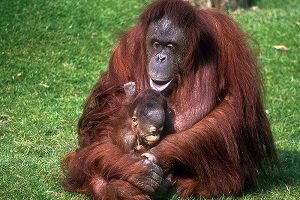

Smokes Covered Some of the ASEAN Countries
 Governments in Southeast Asia are taking steps to guard against a potential deterioration in pollution levels from Indonesian forest fires, as smoke and ash continue to blanket the skies over the region.
Governments in Southeast Asia are taking steps to guard against a potential deterioration in pollution levels from Indonesian forest fires, as smoke and ash continue to blanket the skies over the region.
Orangutan, Human Relatives on Chromosomes, Threatened
The biggest and the most evil threat don’t come from the animals, but from us humans. Their habitats keep decreasing from year to year. It’s hard to live in such a tight place with no things to discover for eat and fulfill the daily needs. In our 20 years of life, Orangutans have lost 80% of their territories. So by that, many if them finally came around the nearby village looking for foods. The result? Most of them burnt by villagers.